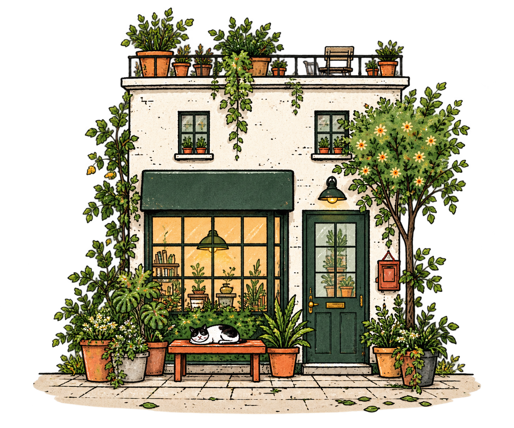
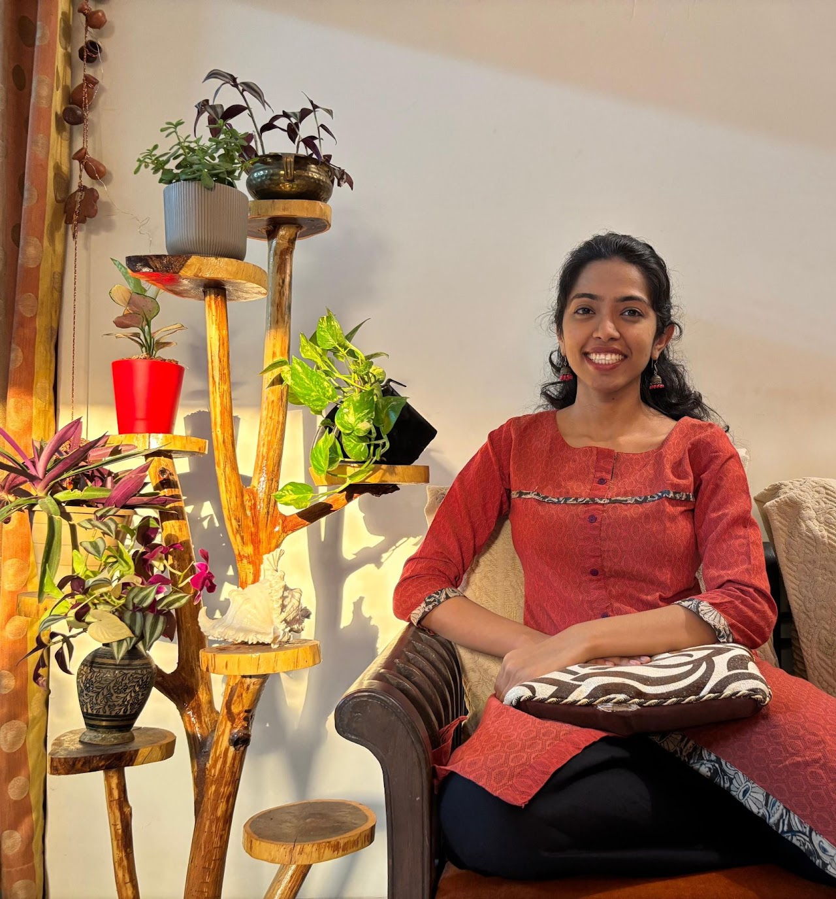

Prachiti’s space never felt clinical or intimidating. For the first time in years of high-pressure work, I felt permitted to unpack my anxiety and burnout without feeling broken. It is a genuine relief to be met with so much gentle warmth.
The Take Two Approach
Figuring life out isn't a one-time process.
We grow. Life changes around us. New experiences ask us to reconsider what we want, what we need, and who we're becoming. A Take Two isn't about starting over. It's about continuing with greater awareness.
It's the space between living automatically and living intentionally: a space to reflect, learn, connect, experiment and choose how we want to live.
"We pause to reconsider what we want, what we need, and who we are becoming."
REFLECT
LEARN
CONNECT
EXPERIMENT
CHOOSE
What Take2 Offers
Spaces, experiences and resources for navigating the many dimensions of adult life.
Four ways to pause, connect and grow.


01
Therapy
Personal spaces for reflection, psychological support and growth.

02
Workshops & Group Spaces
Shared spaces to learn, reflect, connect and explore.

03
Projects & Collaborations
Exploring meaningful questions through psychology, research, creative practice and collaboration.

04
Conversations & Resources
Ideas, stories and perspectives to pause, think and look again.

About the Founder
Hi, I'm Prachiti.
I'm a Counselling Psychologist with a Master's in Lifespan Counselling from St. Xavier's College, Mumbai.
My work sits at the intersection of psychology, everyday life and the questions that come with growing up, around identity, relationships, ambition, uncertainty, transitions and the choices we make along the way.
Take2 grew from a question I keep returning to:
"How can we navigate adult life with greater awareness, agency and wellbeing?"
My own experiences across psychology, UPSC preparation and personal finance have shaped the questions I bring to this work. Different worlds, but all of them have taught me something about how people make choices, deal with uncertainty, define success and figure out what comes next. Take2 is where these threads come together: with psychology at its heart.
I'm interested in making psychological ideas and support more accessible, understandable and relevant to everyday life through therapy, workshops, conversations, projects and collaborations.
Outside of work : Beyond work, I'm usually catching up on podcasts, spending time around plants or enjoying slow mornings with coffee. Always up for a conversation about interesting ideas and new possibilities!
Shared Experiences
Voices from the Take2 Community
Reflections from therapy clients, workshop participants, exam aspirants, and collaborators (shared with consent & anonymized).
From the Take2 Journal
Curated Reads & Reflections
Short essays and practical reflections around therapy, exam journeys, movement, and adult transitions.
De-stigmatizing the Pause: Why Nervous System Rest Precedes Action
Why constantly pushing through exhaustion shuts down the prefrontal cortex, and how somatic deceleration restores agency.
The Silent Grief of the Exam Gap Year: Navigating Invisible Transitions
Addressing ambiguous loss, library isolation, and decoupling your fundamental worth from exam marksheets.
When Boundaries Feel Like Guilt: Relearning Emotional Safety
Navigating family conditioning and shifting from defensive walls to gentle doors in adult relationships.
Rhythm, Mudras & Grounding: The Science of Expressive Movement
How the physical architecture of Bharatanatyam functions as a powerful somatic regulator for everyday emotional stress.
Our Network
Collaborations & Partnerships
Take2 partners with academic institutions, arts organizations, healthcare practitioners, and community study circles.
Academic Institutions
Lifespan counselling research, youth workshops, and student wellbeing dialogues (St. Xavier’s College, Mumbai alumni roots).
Classical Arts Academies
Experiential somatic workshops integrating classical Bharatanatyam, rhythm, and emotion processing for performers.
Neurophysiotherapy Clinics
Take2 × Brain Health: Interdisciplinary workshops on cognitive agility and movement longevity for adults aged 45–60.
Aspirant Communities
Mentorship and mental health circles for civil services, postgrad entrance, and competitive examination candidates.
Schools & Youth Collectives
Bhasha & Beyond: Psychoeducation exploring language diversity, academic confidence, and self-worth for teenagers.
Community Circles
Open group spaces, guided reflective journaling, and collaborative dialogues with grassroot mental health workers.